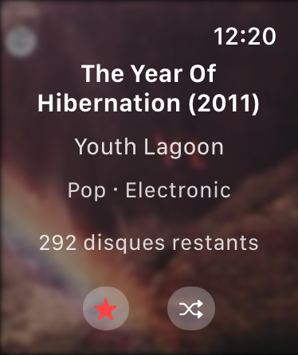
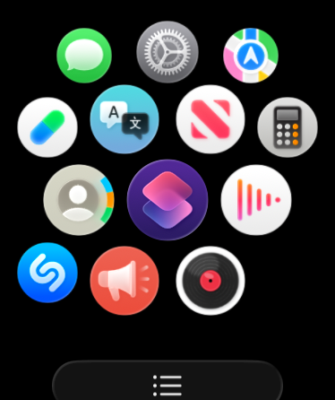
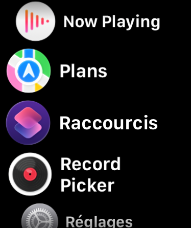
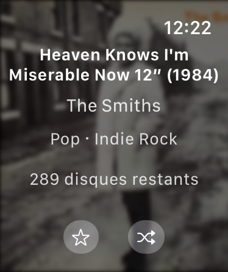

Screenshots and videos
Screenshots
See Record Picker in context on iPhone, iPad, and Apple Watch.
Videos
App previews
Two App Store video previews show the draw, the record bin and the app's main gestures.
iPhone
iPhone
The main mobile views, from first import to the animated draw.


iPad
iPad
Wider views for the draw, bin, and filters.


watchOS
Apple Watch
Companion screens for keeping essentials on the wrist.



